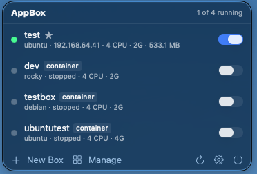
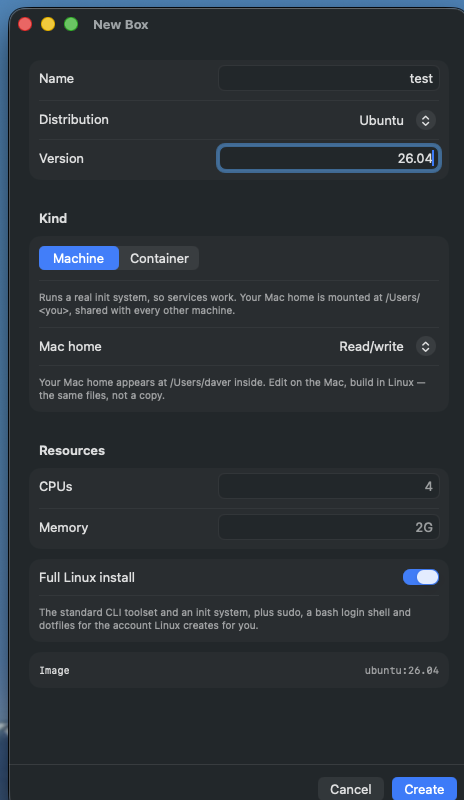
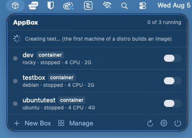
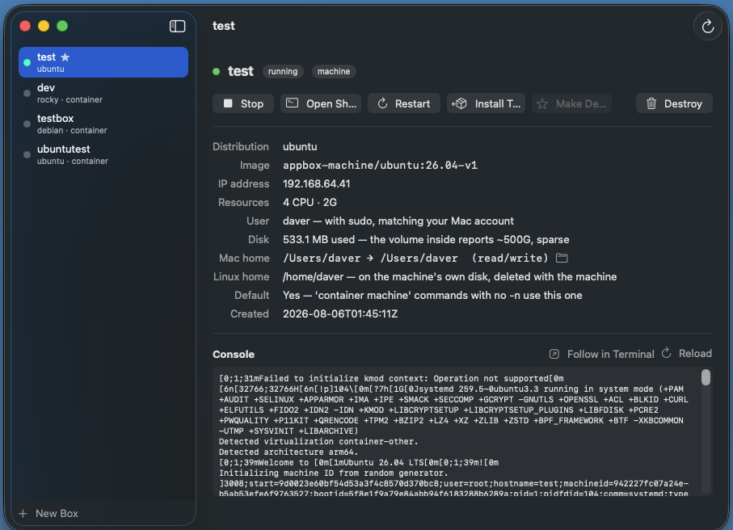
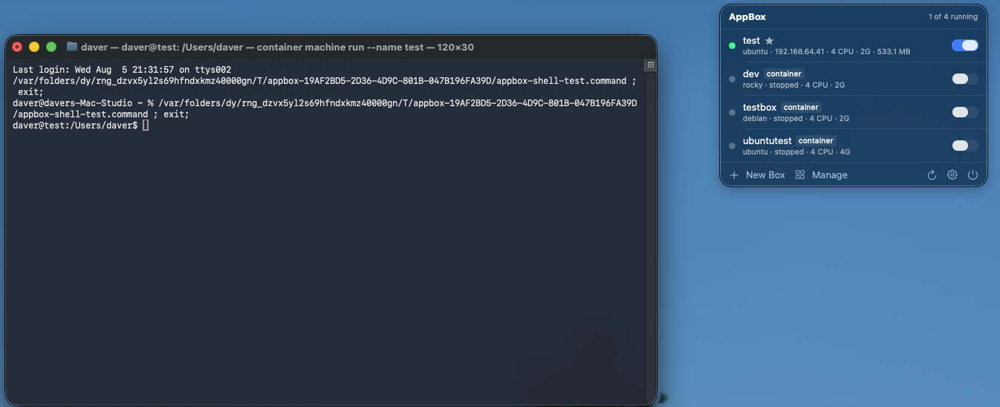

How AppBox turns Apple's container tool into named, persistent
Linux machines that boot systemd, share your home directory, and arrive with the
thirty-odd command line tools a base image forgot — all from an icon by the clock.
macOS is a Unix, and for years that was close enough. It stopped being close enough the
moment your production target became a Linux container. The differences are small
individually and exhausting collectively: BSD sed against GNU sed,
no /proc, no systemctl, no apt, a linker that
disagrees, and a library that isn't glibc. Everything almost works, which is worse
than nothing working, because the failure shows up in CI instead of on your desk.
Windows answered this in 2016 and then answered it properly: WSL gives you a named Linux distribution you switch on, keep, and treat as a computer, with your Windows files visible from inside it. The Mac's answers were always adjacent to the question. Docker Desktop gives you containers — excellent for shipping images, wrong shape for living in, because a container is a process that ends, not a machine that persists. A full VM in UTM or Parallels gives you a real Linux with its own everything, including its own filesystem, which is exactly the wall you were trying not to build. Homebrew gives you GNU tools on macOS, which is a costume rather than a change of species.
The pieces existed. What didn't exist was a thing you could name, switch on, and forget about — one that shared your files rather than copying them.
Apple's container tool is a genuinely
good foundation: an open-source CLI that runs OCI images on Apple Silicon, one lightweight
VM per container, no Docker Desktop license and no always-on daemon eating a core. Version
1.1.0 added the piece that mattered — container machine, which runs the image's
own init system, mounts your Mac home inside at /Users/<you>, and
creates a Linux account matching your host uid, gid and name.
That is the WSL shape, and it is Apple's, not ours. But a bare machine is a rough landing.
Three things stand between container machine create and something you'd actually
work in:
ubuntu:latest has no /sbin/init. The machine gets created
and then dies with "no PID data from sync pipe" — a message that tells you nothing
about the cause. (The package that provides it on Debian and Ubuntu is
systemd-sysv, not systemd. Alpine is the only distro we offer that
boots as shipped, on BusyBox init.)sudo, no bash login
shell, no dotfiles of any kind.curl, no
git, no vim, and — the one that gets everybody — no
ping.Add the fact that the official archlinux image is amd64-only and simply will
not run here, that Rocky publishes no latest tag, and that pacman 7's downloader
sandbox needs --disable-sandbox because it uses Landlock and the container kernel
doesn't support it — and you have an afternoon of archaeology before your first useful shell.

container badge marks the
exception, and the star marks the default machine.The unit AppBox manages is a box: a named, persistent Linux install that survives stop, start, and reboot. By default a box is one of Apple's container machines, and the practical consequences of that are the whole point:
systemctl enable --now nginx works, and it comes back after a restart. Your
Mac home is mounted inside at the same path, not copied — edit in your usual editor
on the Mac, build in Linux, and it is the same file, not a synced approximation. Because your
Linux account is created at your Mac account's uid and gid, a file written inside the box is
owned by you outside it, with no permission juggling on either side.
AppBox keeps the older shape too. A container is the original box:
container run --init … sleep infinity, attached with exec. It has no
init system, but it does have something machines can't offer — a private per-box home and a
/data directory, both on the host, both surviving destroy. Apple's
machine create takes no --volume, so if you need either of those,
the older kind is still the right tool — a deliberate choice, not a leftover.
| Machine (default) | Container | |
|---|---|---|
| Init system | the image's own — systemd where it has one | none (sleep infinity) |
| Services | systemctl works, survives restart | start daemons by hand |
| Your Mac home | mounted at /Users/<you> | not mounted |
| Private per-box home | no — dies with the machine | yes, kept on the host |
/data volume | no | yes, kept on the host |
Survives destroy | nothing — but your Mac home is untouched | home and /data |
| Needs | container 1.1.0+ | any container |
Nothing about the box idea is new. Linux has had it since 2008, when LXC first wrapped the kernel's namespaces and cgroups into something you could hold, and it has been pleasant to live with since 2015, when LXD added a daemon, a REST API and a decent CLI on top. (Incus is the Linux Containers project's fork of LXD, made after Canonical took the project in-house in 2023; the two are still near-identical to use.)
The distinction this whole article turns on — machine versus container — is the same one LXD draws between a system container and an application container. A system container boots the distribution's own init, runs many processes, keeps its state, and is something you log into. An application container runs one process and exits. Docker won so completely at the second that plenty of people have forgotten the first is a category at all.
A box is a system container. If you've run LXD, you already know what AppBox is, and most of the vocabulary maps straight across:
| Concept | LXD / Incus | AppBox |
|---|---|---|
| Full-OS, persistent instance | system container | machine (default) |
| Single-process instance | application container | container |
| Create | lxc launch ubuntu:24.04 dev | appbox create-ubuntu dev 24.04 |
| Interactive shell | lxc shell dev | appbox shell dev |
| One-off command | lxc exec dev -- cmd | appbox exec dev cmd |
| Lifecycle | lxc start|stop|delete | appbox start|stop|destroy |
| Share host files | disk device, plus an idmap | your home, mounted automatically |
| Runs on | Linux | macOS on Apple Silicon |
The differences fall where you'd expect. LXD carries a decade of operational surface AppBox has no answer to: snapshots and rollback, profiles, storage pools on zfs, btrfs, lvm or ceph, clustering across hosts, live migration, and the option of running a real VM under the same CLI. It is serious infrastructure software. AppBox is a menu bar app.
Two things run the other way, though. The first is that LXD doesn't run on macOS — which, for this article, is the entire problem. You can run it inside a Linux VM on your Mac, and if you want profiles and snapshots that is the right answer, but now you are managing a VM in order to manage containers, and your Mac files sit two boundaries away from the thing using them.
The second is file ownership, and it's the one that surprises people. LXD's unprivileged
containers map the container's root to a high host uid range, so a directory shared in from
the host arrives owned by nobody useful — and fixing it means raw.idmap entries,
or shiftfs, or idmapped mounts, depending on the year and the kernel. AppBox never has that
conversation: container creates the Linux account at your Mac account's uid and
gid, so a file written inside is owned by you outside. By construction, not by
configuration.
The New Box window explains every choice in place, because the answers have consequences
you shouldn't have to discover afterwards. The version field adapts
per distribution — it tells you Ubuntu's latest means the newest LTS, and that
Rocky has no latest tag at all. The Mac home setting says, in words, where your
files will appear inside. Full Linux install is on by default.

/Users/daver lands inside the box, and what the resolved image will
be.
That one-minute first build is doing the work described above. Because most images can't
boot as a machine, AppBox composes one that can — the upstream image plus an init system plus
the toolset — and caches it as appbox-machine/<distro>. Each recipe ends
with RUN test -x /sbin/init, so a mistake fails the build rather than the boot,
where it would have surfaced as that unhelpful sync-pipe error.
container
creates itself. It is idempotent, which is what makes "Install Standard Toolset" safe to
re-run on any box.A "full Linux install" here means roughly 28 packages that base images
don't ship: curl, wget, git, vim,
nano, sudo, dig, ip, ping,
htop, tmux, jq, tree, rsync,
less, man, unzip, ca-certificates and
friends — installed with the right package manager for the distro, plus sudo, a bash login
shell and dotfiles for your account.
It sounds mundane. It is the difference between a box and a chore — and harder to get
right across six distributions than it looks: dnf aborts an entire
transaction over one unavailable package, and htop lives in EPEL rather than
Rocky's default repositories — so a plain install of the toolset on Rocky installed
nothing at all. AppBox probes for --skip-unavailable (dnf5) and falls
back to --setopt=strict=0 --skip-broken (dnf4, which Rocky 10 still ships), so a
package it can't find is skipped rather than fatal.
The management window gives per-box detail adapted to what the box actually is. A machine
shows the image it was built from, its DHCP address, how much disk it really occupies, your
Mac home with a reveal-in-Finder button, the separate Linux home on the machine's own disk,
and whether it's the default machine. A container shows its persistent home and
/data instead. The console below carries the boot log — a real systemd boot, on a
machine.

533.1 MB used because the volume inside reports ~500G and is sparse — the
honest number is the one shown.Clicking a row — or Open Shell — starts the box if it's stopped and drops you into a real Terminal window as your own user, not as root. On a machine you land in your Mac home, mounted at the same path inside, so the files you were editing thirty seconds ago are right there. Your terminal profile, your scrollback, your window management. No embedded terminal emulator, no compromises about which one you like.

daver@test:/Users/daver. Same user, same
path, same files — running on Linux.container — the signed .pkg from
its releases page. There is no
Homebrew cask. AppBox drives this tool; it is not optional.appbox binary from inside the bundle onto your PATH. Do it after
moving the app, since the symlink points at where the app was at install time. The installer
lists every appbox on your PATH in resolution order, so a shadowed
install is visible rather than mysterious — and anything in the way is renamed to
appbox.previous, never deleted.appbox create-ubuntu dev 26.04, or the New Box
window. Name and version may be given in either order.appbox shell dev, or click the row. It's already
provisioned.The CLI is the same engine as the app, not a reimplementation of it, so the two faces cannot drift:
appbox create-ubuntu web 24.04 # latest = newest LTS
appbox create dev ubuntu --container # the isolated-home kind
appbox create ci alpine --home-mount ro --cpus 8 --memory 8G
appbox shell web # auto-starts the box
appbox exec web 'systemctl is-active nginx'
appbox exec --root web 'apt-get install -y postgresql'
appbox use web # make it the default machine
appbox list # both kinds, * marks the default
appbox start|stop|restart|ip|info|provision|destroy <name>Flags come before the box name on exec; everything after the name passes
through untouched, quoting included. A bare appbox create <name> never
silently picks a distro for you — it uses $APPBOX_IMAGE, then the distro saved by
set-default, and otherwise prints a menu and exits. Six distributions are offered
with verified arm64 images, and any other value is passed through as a raw image reference, so
appbox create tiny busybox:latest works too.
| Capability | WSL 2 | LXD / Incus | Docker Desktop | Full VM | AppBox |
|---|---|---|---|---|---|
| Named, persistent Linux you switch on | yes | yes | no — images, not machines | yes | yes |
| Real init, services survive restart | yes | yes | no | yes | yes — systemd |
| Host files shared, not copied | /mnt/c | disk devices | bind mounts | shared folders, with friction | home, same path |
| Host uid/gid ownership matches | metadata opts | idmap config | a recurring nuisance | no | yes, by construction |
| Usable in seconds after create | yes | yes | image-dependent | no — full OS install | yes, after first per-distro build |
| Tools present on first login | distro defaults | distro defaults | no — base images | yes | ~28 pkgs + sudo, bash, dotfiles |
| Multiple distros side by side | yes | yes | yes | one VM each | six, one command each |
| Snapshots, profiles, clustering | no | yes | no | snapshots only | no |
| Idle cost | low | low — one daemon | daemon + license | a whole VM | low |
| GUI apps, drive-wide mapping, host/guest interop | yes (WSLg) | no | no | yes | no |
| Runs on | Windows | Linux | anywhere | anywhere | Apple Silicon, macOS 15+ |
/mnt/c equivalent (your home is
mounted; the rest of the disk isn't), no interop layer running Linux binaries from the macOS
side, and none of LXD's operational machinery — no snapshots, no profiles, no clustering, no
storage pools. What it reproduces is the operating model those two share — a named
Linux you switch on, keep, and share your files with — on the one platform that had no
native answer for it.
Two things are worth understanding before you commit, and both come from Apple's design rather than ours.
A machine's disk always goes when the machine does. There is no keeping
it. That is less of a loss than it sounds, because the files you care about live in your Mac
home, which was mounted rather than copied — destroying a machine costs you installed
packages, not your work. But it does mean a machine is the wrong place to keep anything you
haven't put under /Users/<you>.
Every machine sees that same one home, with no isolation between them.
rm -rf ~ inside a machine reaches your real files. That is the price of the
shared-files model, and the mitigation is offered at create time for exactly that reason:
--home-mount ro, or none. If you're going to point something
untrusted at a box, that's the moment to reach for them.
A container inverts both trade-offs — its home and /data live on the host and
survive destroy, so you can destroy one, recreate it on a newer distro release
with different CPU and memory, and your dotfiles, keys, shell history and checkouts come back
with it. It just has no systemd.
The rest of the sharp edges are documented rather than hidden: IP addresses are DHCP and
change across restarts, so use the box name or appbox ip and never hardcode one.
Upgrading Apple's container CLI while the old daemon keeps running breaks
networking with a spectacularly unhelpful error — AppBox detects that specific case and offers
to restart the service. And id may report an odd group name inside, because your
box user takes your Mac gid of 20, which Debian, Ubuntu and Alpine all already call
dialout; ownership is numeric and correct, only the label is strange, and
renaming a system group would be the worse fix.
If you develop on a Mac and deploy to Linux, the pitch is short: stop testing on an approximation. Build against the same libc, the same package manager and the same init system your production host runs, using the editor and the files you already have open.
If you're a sysadmin or a homelabber, a box is a scratch machine that costs one command and
half a gigabyte. Try the playbook, break the config, destroy, start again —
across Ubuntu, Debian, Alpine, Fedora, Rocky and Arch, without a hypervisor UI or a single ISO
download. If lxc launch is already muscle memory on your Linux boxes, this is
that reflex, on the laptop.
If you're learning Linux, the case is strongest of all. The reason WSL mattered wasn't technical; it was that it removed the ceremony between wanting a Linux and having one. That's what an icon by the clock with a switch beside each box is for.
None of this required writing a hypervisor or forking a container runtime. Apple built the hard part and shipped it for free. What was missing was the last hundred meters — knowing which images actually boot, which packages actually exist, what an unhelpful error message actually means, and doing all of it once so nobody has to do it again. That's the whole project: not a new virtualization stack, just the difference between a platform capability and something you'd use on a Tuesday.